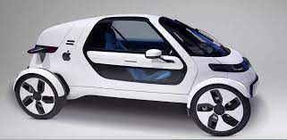

Internamente os carros autônomos apresentam tecnologia por todos os lados, oferencendo até mesmo opções de upgrade para o sistema.
INFORMAÇÕESCarros autônomos
O futuro de veiculos automotores está a caminho.
Uma caracteristica interessante de carros autônomos é a maior parte deles também são elétricos, isso dá uma vantagem para eles por serem menos poluentes e ter um custo monetário menor do que carros a combustão.
INFORMAÇÕESCarros autônomos são mais compactos ou mais espaçosos, por possuirem motores elétricos que ocupam muito menos espaço. Esse fator pode fazer com que ele tenham lugares de sobra para que você possa carregar muitas coisas, ou ele também podem ser mais copactos e menos espaçosos.
INFORMAÇÕES
